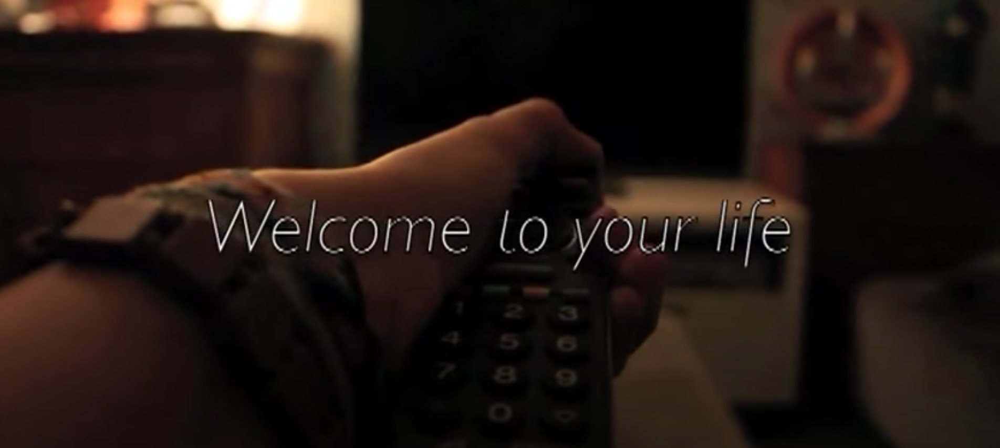
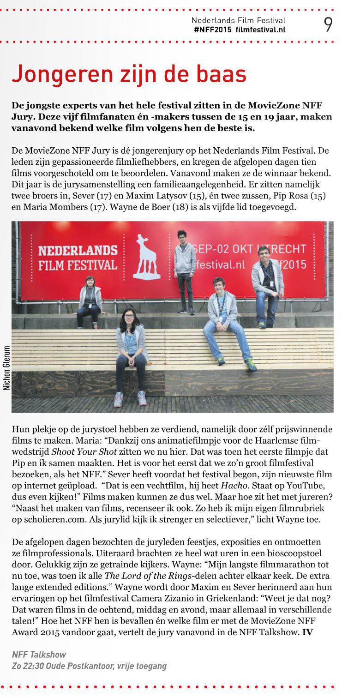

Wat is Shoot Your Shot
Shoot Your Shot is een jaarlijkse Haarlemse filmwedstrijd voor jongeren georganiseerd door de filmschuur. Het is de bedoeling dat je een korte video maakt waar het gegeven thema duidelijk naar voren komt. Tijdens het proces zijn er workshops en verschillende rondes. Tijdens de finale worden de beste films vertoond voor de jury en het publiek en worden er prijzen uitgereikt.
Welcome to your Life
Samen met mijn zus, Maria Mombers, heb ik in 2014 aan de 10e editie meegedaan. Het thema was dat jaar ‘schijn’. Wij hebben een korte video gemaakt over hoe het digitale leven invloed heeft op hoe je jezelf ziet en hoe ver je kan gaan om je zelfbeeld te verbeteren. Als je op de foto klikt kun je de video bekijken.
Gewonnen
Met deze film hebben wij de 1e plaats van de jury gewonnen. Als prijs werd onze film één week lang vertoond als voorfilm in de fimschuur, mochten we gratis naar de moviezone talentday en zaten we in de jongerenjury van het Nederlands Film Festival.
